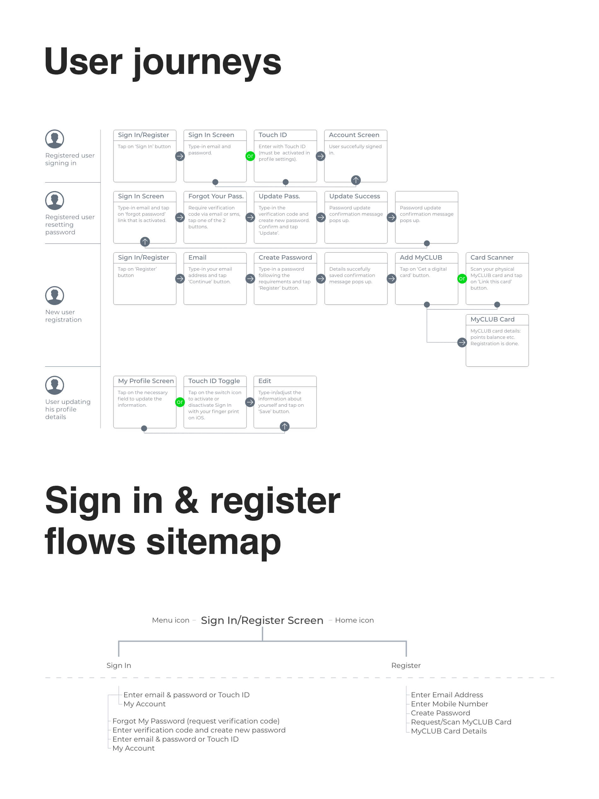

As a loyal customer of “Carrefour” supermarkets I faced inconveniences when registering and signing in the company’s mobile application. The reason I started using the app was the digital Club card.
I often forget my membership card at home but I usually don’t leave my phone at home. Keeping the digital copy of the card in my mobile application is great, however having troubles with the sign in and registration process was annoying. Therefore I came up with a new user experience flow.
